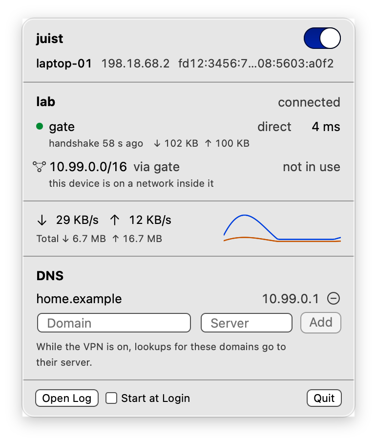
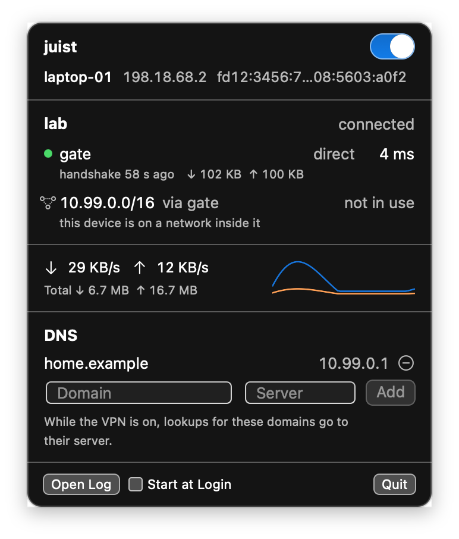
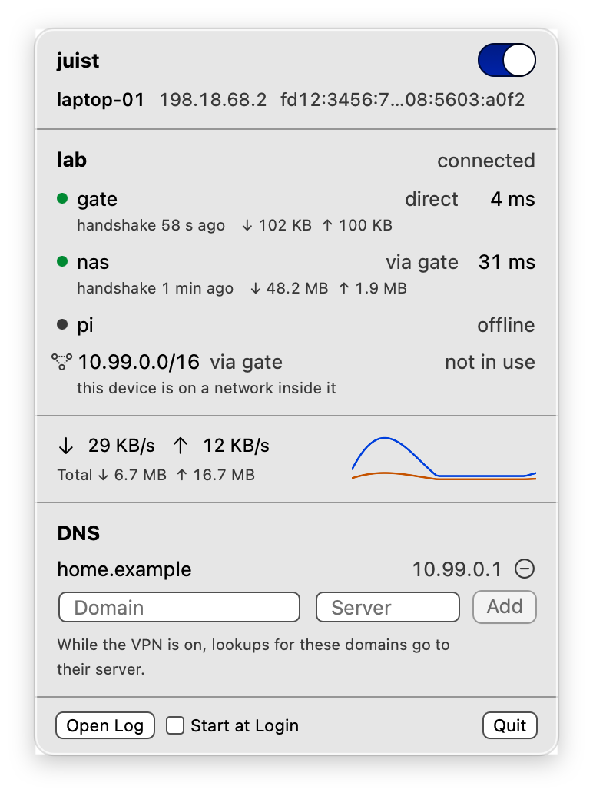
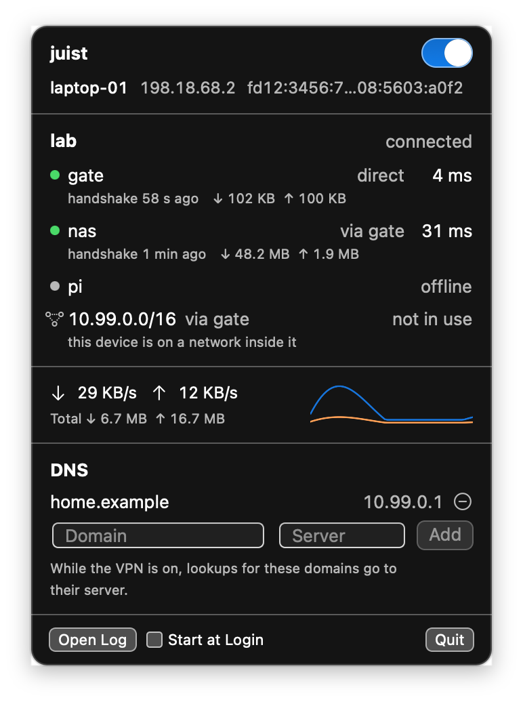
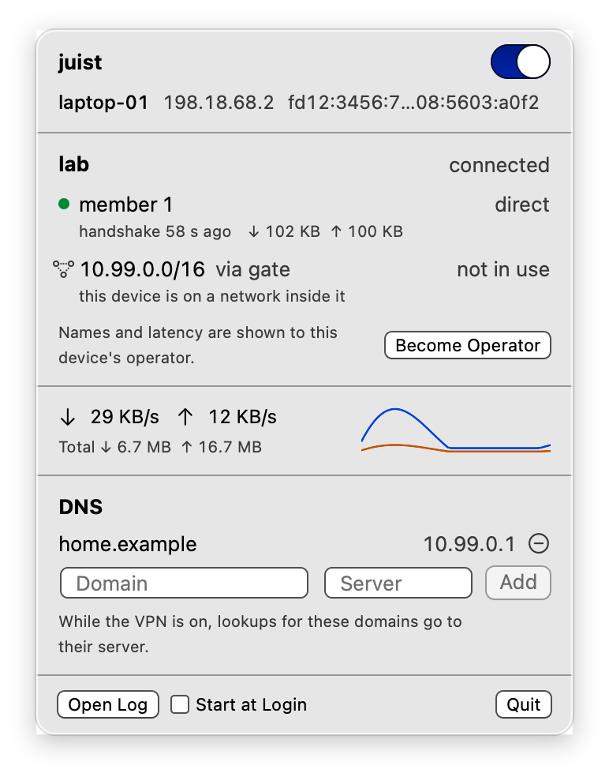
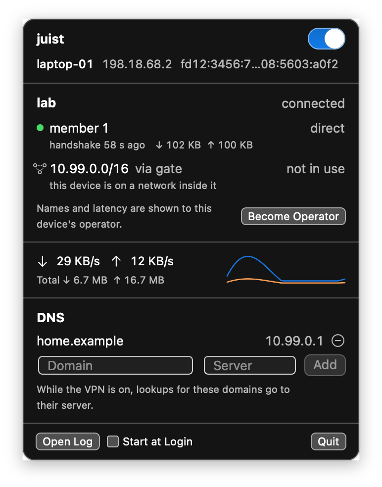
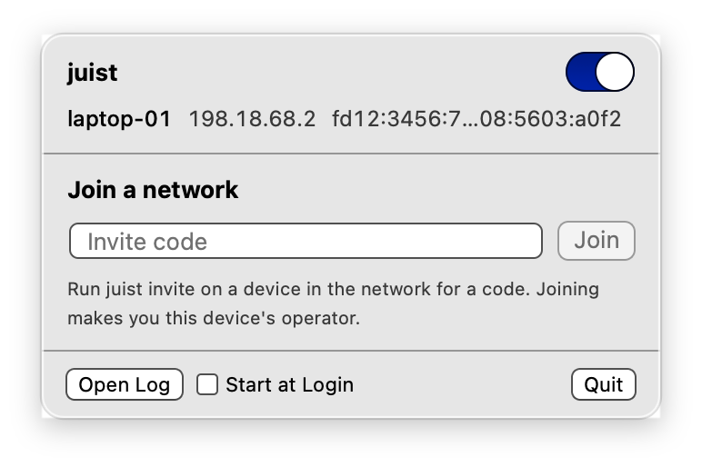
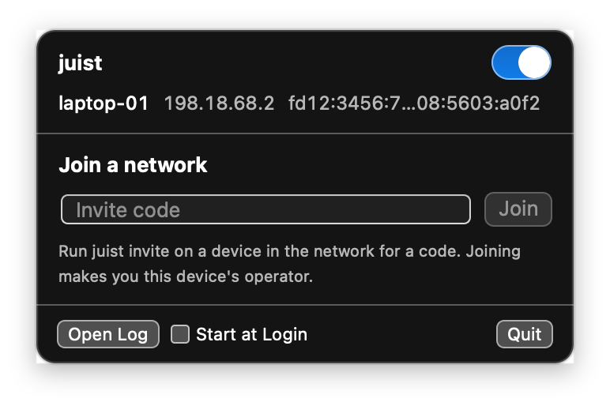

Priel · macOS menu bar app · OPNsense plugin
juist, with a switch.
A menu bar app for juist, the peer-to-peer WireGuard mesh VPN, on the Mac, and an OPNsense plugin for the firewall end.
Version 0.2.0 · macOS 14 or later, Apple silicon and Intel
brew trust --cask 0x23me/tap/prielbrew install --cask 0x23me/tap/prielOr take the zip from the latest release.
The switch turns juistd on and off. Below it, this Mac's addresses and every device in the network: direct or relayed, last handshake, round trip in ms.


It used to be two shell scripts. And a password every time I wanted the VPN off.
- before
sudo launchctl bootstrap system io.juist.juistd.plistsudo launchctl bootout system/io.juist.juistdjuist status - nowA switch. A password the first time and after updates.
Every device: direct or relayed, handshake, ms.
Join with the code fromjuist invite.
What the window shows. Everything comes from juistd's own socket.


Direct, relayed, gone
Relayed devices name their relay. Offline ones just say offline. A juist subnet you're already on shows as not in use, so your LAN keeps working.


Member 1, no ping
juistd hides names from users who aren't its operator. Become Operator asks for your password once and fixes it.


Paste the invite code
Run juist invite on any member, paste the code here. You also become this Mac's operator.
What runs where.
Turning it off unregisters the daemon. It stays off across reboots.
- juistdA root-owned copy from Priel.app, kept alive by launchd, up before login. Root keeps the tunnel; the rest runs as the hidden user
_juist. - /var/db/juistKeys and membership,
_juist's. Kept through off, upgrades and deleting the app. Shared with juist's own installer, which Priel takes over from. - /etc/priel/juistd.flagsExtra juistd flags, say
--no-dht --no-stun. Root-owned or it's ignored. - 0x23me/juistjuist plus the one commit this needs: your home LAN stays direct. Read it, it's short.
The firewall end.
As root on the firewall, OPNsense 26.7 or later. The first line adds two repositories, read it. The second pulls in juist.
fetch https://0x23me.github.io/priel/opnsense/setup.sh && sh setup.shpkg update && pkg install os-juist- VPN › juistService, ports, relay.
- UpdatesWith the firewall's own.
- Interface groupA juist group for your rules.